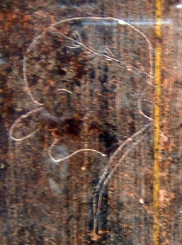
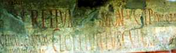
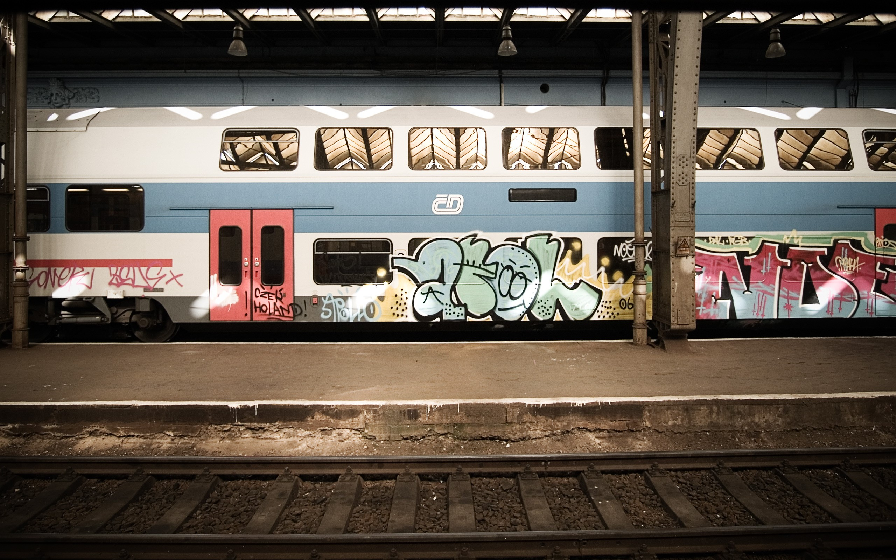

Istoria Graffiti
Din punct de vedere istoric, termenul "graffiti" se referea inițial la inscripțiile, portretele, etc. găsite pe zidurile mormintelor antice sau pe ruine, ca în Catacombele din Roma sau în Pompei. Sensul cuvântului a evoluat, desemnând acum orice decorație (inscripționată pe orice suprafață) care poate fi privită ca vandalism; sau imagini sau scriituri plasate de obicei pe pereți externi și trotuare, fără permisiunea proprietarului. Prin urmare, inscripțiile făcute de autorii unui monument nu sunt catalogate ca graffiti.
|  |
Romanii gravau graffiti în proprii pereți și monumente, iar exemple ale lucrărilor lor există de asemena și în Egipt. Erupția Vezuviului a păstrat graffiti zgâriat pe pereții din Pompeii, și ne oferă o perspectivă directă asupra vieții de stradă: latină vulgară, insulte, magie, declarații de dragoste, mesaje politice. În contrast cu tipicul graffiti-ului modern, alfabete și citate din literatură (în special primul vers din "Eneida" de Virgil) au fost găsite pe pereții din Pompei, fie pentru plăcerea scriitorului, fie din dorința de a impresiona, deşi anonim, trecătorul prin familiaritatea sa cu literele și literatura. Villa lui Hadrian din Tivoli, Italia, are de asemenea câteva exemple. Unul dintre ele a rezistat în timp, avertizând: "Cave Canem", care înseamnă "Atenție la câine", lângă imaginea câinelui menționat.Totuși, nu numai grecii și romanii făceau graffiti: situl mayaş din Tikal, Guatemala, conține de asemenea exemple antice. Graffiti produs de vikingi există în Roma și la Newgrange, în Irlanda.
|  |
Istoria graffiti-ului este veche de când lumea. Oamenii au pictat din totdeauna pe pereţi,pe ziduri: fie că era vorba despre picturi in peşteri, de inscripţii pe zidurile cetăţilor antice, de mormintele egiptene bogat pictate, de ciclurile biblice de pe pereţii bisericilor sau de "graffiti-ul" modern de astăzi. Graffiti-ul a ajuns in atenţia publică in 1971 printr-un articol publicat în "New York Times", în care se vorbea despre "Taki 183", o semnatură care incepuse să se raspândească pe zidurile oraşului şi care aparţinea unui anume Demetrios.
Şi înainte de acest moment găştile practicau graffiti-ul pentru a-şi marca terenul,însă abia articolul respectiv a declanşat o adevarată graffito-manie. A inceput întrecerea furioasă printre tinerii writeri, pentru cele mai neobişnuite locuri şi cea mai mare frecvenţă de apariţie a tags-urilor. Iniţial cel mai important mesaj era numele write-ului respectiv al grupului. Pentru a se ridica din masa de tags-uri unii writer-i au început sa experimenteze cu tuburi de spray. Cu ajutorul acestora se putea lucra mai repede,mai colorat şi pe suprafeţe mult mai largi. Apoi au descoperit potenţialul zid umblător al metrourilor şi ceva mai târziu al trenurilor.
Graffiti-urile au inceput să împânzeasca oraşul. Pentru tineri, graffiti-ul făcea parte din cultura lor, cultura străzii, în strânsă legătură cu Hip-Hop-ul şi breakdance-ul, bineînţeles că "mâzgăliturile" cum le numeau autorităţile nu se potriveau cu imaginea unui New York "clean", aşa că incepe vânătoarea de sprayeri. Au existat cazuri tragice in care sprayerii şi-au pierdut viaţa în timp ce incercau să fugă de poliţie, curentându-se de cablurile de înaltă tension din subteranul de la metrouri.
American Graffiti - Cum a început totul
Graffiti-ul american îşi are originile la sfârşitul anilor '60 - începutul anilor '70 la New York. Tineri din cartierele sărace, în special agro- şi latino-americanii se apuca să marcheze iniţial cartierul, apoi intreg oraşul cu nume fanteziste. Deşi tags-urile erau de mult la ele acasă in underground-ul new yorkez, articolul din "New York Times" declanşează un adevărat potop de graffiti.
Din cauza concurenţei mai mari writerii încep să-şi diversifice, să-şi dezvolte stilul, trecând de la litere simple la stiluri complexe pe suprafeţe mari, adesea ornate cu figuri (în special pe vagoanele de metrou). Începutul anilor '80 marcheaza perioada de glorie a graffiti-ului american, aproape toate metrourile sunt sprayate de la un capăt la altul. Însă începe politica de "toleranţă zero" care mai temperamentează explozia de graffiti-uri din oraş. La începutul anilor '80 apar primele graffiti-uri americane in europa, la Paris,Amsterdam şi Munchen.
|  |
Arta Graffiti trece Oceanul şi poposeşte in Europa
Mişcarea studenţească din '68 a impulsionat foarte mult graffiti-ul politic. În anii '70 zidul in sine a avansat în centrul interesului writerilor. Existau o groază de ziduri de beton considerate de artişti inumane, menite să le distrugă spaţiul vital. America trăia perioada de glorie a graffiti-ului pe vagoanele metrourilor,când au apărut primele desene pe zidurile din Zurich (1977). Acestea difereau mult de cele americane şi purtau semnătura lui Harald Naegli. Naegli a fost arestat şi condamnat în 1979 dar eliberat pe cauţiune. Neagli considera ca ceea ce face este un protest artistic faţă de politica statului. Deşi considerat ilegal şi în Europa, graffiti-ul nu a încetat să tenteze tinerii din cele mai diverse categori, de cele mai multe ori tineri talentaţi, cu potenţial artistic evident. Din Europa provine şi cel mai mare graffiti politic de până acum: Zidul Berlinului.